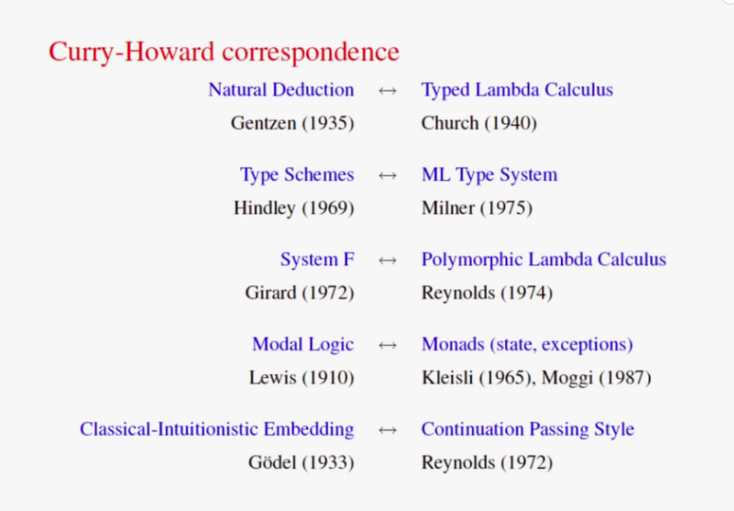
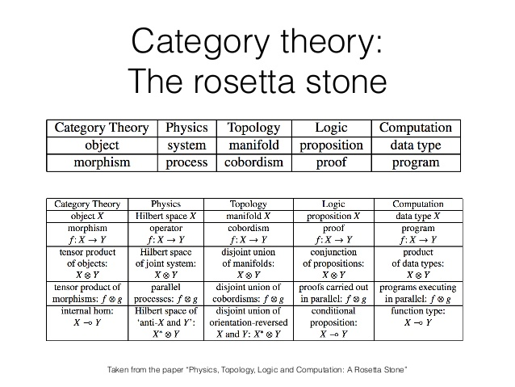

Philip Wadler (Lambda Man-not trademarked) has made the claim that God programs in Haskell (or some more pure form of functional programming language). In more recent public apparences he seems to backtracked slightly but seemly as much over the definition of 'God' as his main contention that functional programming represents something of an eternal Platonic form encapsulating thought.
Wadler observes that Philosophy (and Maths) and Computer Science all (relatively) independently arrived at typed lambda calculus to formalize the expression of computation. These diverse paths arriving at the same objective under very different conditions suggest typed lambda calculus is a discovered fundamental truth of the universal computational thought independent of the inventions of human intellect. This dichotomy parallels the age old debate of questioning if mathematics itself is discovered or invented (see Sir Roger Penrose's opinion on the matter)
In sum, listen to the podcast titled God's Programming Language interviewing Philip Wadler on the Corecursive podcast.

